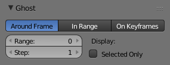

重影¶
参考
模式: 姿态模式
面板:
{kind=link}
{kind=link}
在传统的卡通创作中，动画师使用描图纸，来查看前几帧。这样可以看到角色的大致动作，而无需回放。
Blender的特征与 Pose Mode 中的骨架非常相似：“重影（洋葱皮）”。重影是黑色轮廓（或多或少的不透明度）的骨骼，因为它们在某些框架。
Options 选项¶

重影面板。
重影设置在 骨架 标签中可以找到，仅在 姿态模式 中有效。
- Type 类型
- Around Current Frame 附近帧上
- 这将在当前帧之前和之后显示给定数量的重影。重影在当前帧被遮罩不透明，在最远的帧处是透明的。
- In Range 帧区间内
- 这将在给定范围的帧内显示骨架的骨骼的重影。重影从第一帧的透明度到最后一帧不透明。它有四个选择：
- On Keyframes 关键帧上
- This is very similar to the In Range option, but there are ghosts only for keyframes in the armature animation (i.e. frames at which you keyed one or more of the bones). So it has the same options as above, except for the Step one (as only keyframes generate ghosts). Oddly, the shading of ghosts is reversed compared to In Range -- from opaque for the first keyframe, to transparent for the last keyframe.
- Range 范围
- 这个数字按钮指定 "两边" 重影（即5的值会给你十个重影，当前帧前五个，后面帧五个）。
- Start, End 起始，结束
- 该数字按钮指定开始/结束帧范围（排他）。请注意，不幸的是，它不能取空值或负值，这意味着你只能看到从第2帧(包含)开始的重影...
- Step 步长
- 该数字按钮指定您是否为每个帧（默认值为1）有一个重影，或者每两帧，每三帧一个等等。
Display 显示¶
- Selected Only 仅显示所选骨骼的重影
- 启用后，只能看到所选骨骼的重影(否则，骨骼中的每个骨骼都会有重影...)。
最后，这些重影在播放动画时也是激活的 Alt-A - 这只适用于 附近帧上 选项，当然...
Note
没有“全局开关”禁用此显示功能。为此，你必须将 Ghost 设置为0（对于 附近帧上 选项），或者 Start 和 End （对于其他两个重影类型）中的相同帧号。